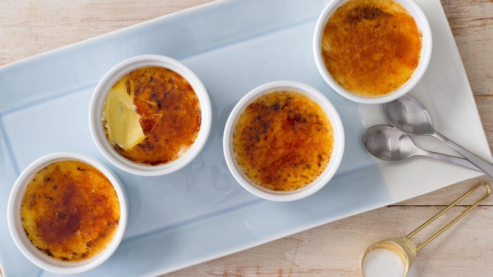

Recipe for Créme brûlée
yield: 6 prep time: 30 minutes cook time: 20 minutes total time: 50 minutes
Créme brûlée is one of the most delicious French desserts out there. It consists of an egg yolk based custard with a crunchy hardened sugar topping.

Although making this dessert may seem intimidating, it's actually surprisingly easy. However, it is extremely important to have the right tools so, I have included a table of my favorite essentials for the perfect Créme brûlée, here.
Ingredients:
- 6 egg yolks
- 3 cups heavy cream
- 1/3 cup of sugar
- 1 vanilla bean
- 6 tbsps sugar for the top
Process:
- Preheat oven to 300F (150C).
- In a saucepan combine the heavy cream, vanilla bean seeds and the pod. Bring to a simmer.
- Meanwhile combine the egg yolks and sugar
- Fish out the vanilla pod from the milk mixture, and slowly pour a stream of the hot milk into the egg mixture. Whisk to combine.
Using a fine mesh sieve, over a heat safe bowl, strain the mixture.
- Ladle mixture into ramekins, and place in a roasting pan. Place in the oven and pour hot water slowly in the corner of the roasting pan (to avoid splashing into the custards. They will not set if they are mixed with splashed water, so be careful not to splash). Place just enough so that it reaches half way up the ramekins.
- Bake for 15-20 mins just until custards are set and jiggle slightly.
- Allow them to cool, then cover and refrigerate.
- To serve sprinkle tops of custard with 1 tbsp each of sugar. And blow torch them for about 5 seconds each or until the top looks caramelized and is hard to the touch.